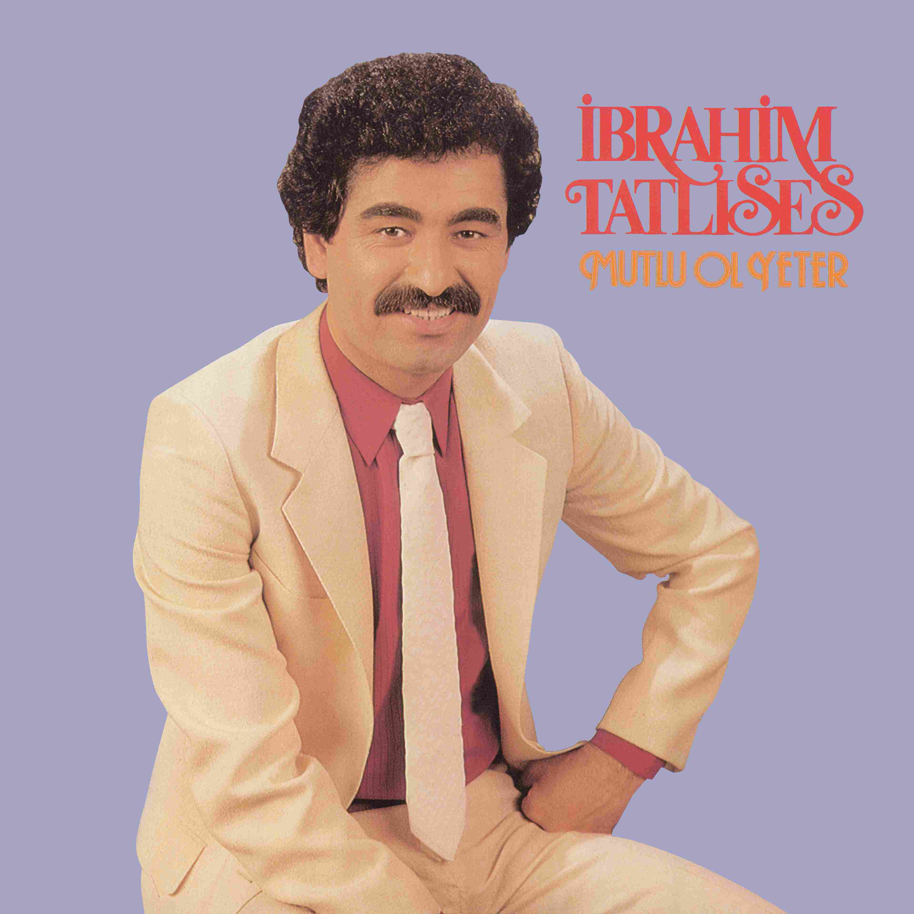
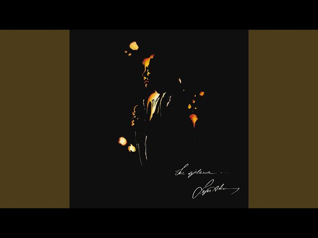
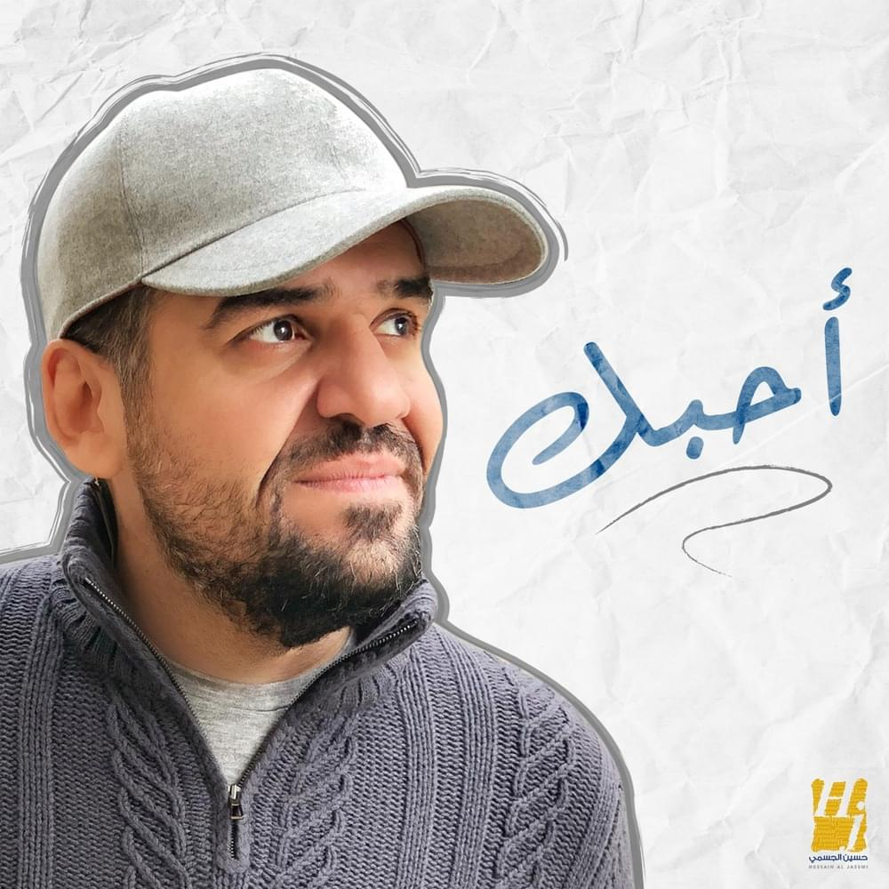
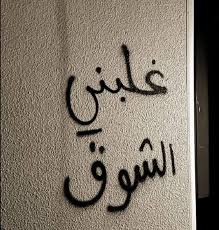
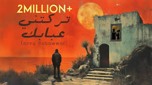

quiet chaos

bir kere sevdim
şimdi ben siz gunlerin
heba olan dunlere mi yanayim
bir kere sevdim!"
uyanmak zor sensiz
hasret cektim
oysa sevmek

mutlu ol yeter
bir seni duşundum

gecmiş degil...
koşe başlarin da
ben hala dolaşyorum
sen affetsen ben affetmem
dunya
ben sana gel dedim

deli sanyorlar

geri don !

unutamadim
senden geçemiyorum
ashes of dreams
انا الغلطان
نايم و افكر فيك
القصه فلم
رتتك ثلج
اذا رايح اخذ روحي
رح اضل حبك
وحدي بقيت اتخييلك
شفت بس صورتك يمي
غنيت
جهنم ذبني وحرقني
حرامات
لو قلبي عنده جناح
بعدك عليي جارحني

كل ما نويت انسى
لا تذكروني
لا تظن
Scattered feelings
مسألتنيييش

غلبني شوق
وش تبين
و عمري مشكي
خليني
اصبت روحي
الجاني
كان نفسي اهرب
يجرا ايي
فوق
ليشش
يوم ناظر
فين لوعود
يوم لوداع

مرقت الأيام
ما جاش في بالكك
يا ريتو مني ما راح
معقول انساك
اوول مرا تكوني هيك

شكلك نسيت
لو يرجع زاماني
?لي لحبو ما بنسو
مشتاء